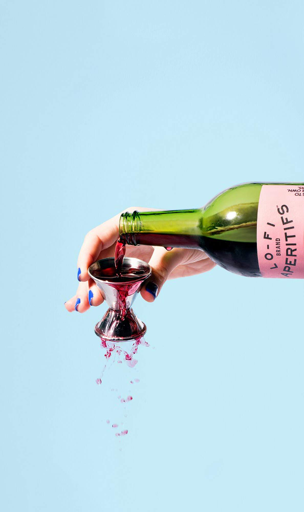

Lo-Fi provides both home bartenders and mixologists with the perfect tools for creating delicious cocktails,
whether they’re using classic 1:1 proportions or mixing up new creations.

Dry Vermouth
A perfectly balanced dry vermouth is the key to a great cocktail.
We’ve crafted ours with a combination of cherry, fennel, elderflower, anise and chamomile.